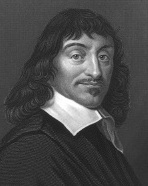

Fransa’da La Haye’da dünyaya gelen Rene Descartes (1596-1650) felsefe, matematik ve bilimde devrim yaratan eserler yazmadan önce uzun yıllar boyunca orduda mühendis olarak çalıştı. Felsefesi bugün Kartezyenizm veya Kartezyen felsefe olarak bilinir.

Descartes’ın felsefi projesi o zamanlar Fransa’da ve Avrupa genelinde üniversite eğitiminin temelini oluşturan Aristotalesçi bilim sisteminin yerini almaktı. En önemli sayılan eseri İlk Felsefe Üzerine Derin Düşünceler (1641) eseridir. Kitap, seyahatleri sırasında küçük bir odada geçirdiği altı gün boyunca edindiği düşünceleri nakleder. Descartes tüm inançlarını sorgulamaya teşebbüs etti ve sadece gerçekliğinden şüphe duyamayacağı inançlarını korudu. Descartes meşhur gözlemini, yani düşünüyor olduğuna göre varlığından şüphe edemeyeceği gözlemini bu çalışması esnasında yaptı: “Düşünüyorum, öyleyse varım” veya Latincesiyle “Cogito, ergo sum.”
Descartes temelde varoluşunun şüpheli olmadığı sonucuna varırken, bedeninin doğasından şüphe duyabileceğine inandı. Descartes, zihin ve bedenin birbirinden ayrı olduğunu savunuyordu, çünkü düşünme becerisi çürütülemez bir gerçekti, oysa fiziksel bedeninin varlığı öyle değildi.
Descartes, bedenin fizik ile tarif edildiğine inandı. Beden, büyüklüğü, şekli ve hızı olan hareket halindeki geometrik şeylerdir. Diğer yandan akıl, maddi olmayan düşünen şeylerdir. Bu yüzden Descartes’a göre hayvanlar sadece birer makineydi. Çünkü düşünmüyorlardı (öyle varsaydı), akılları yoktu ve hareket eden parçaların oluşturduğu karmaşık bir düzenlemeden ibaretlerdi.
EK BİLGİLER:
1. Descartes bedene, “res extensa” (yer kaplayan şey) ve zihne “res intelligence” (düşünen şey) adını verdi.
2. Descartes, koordinat geometrisi de denen analitik geometriyi icat etti.